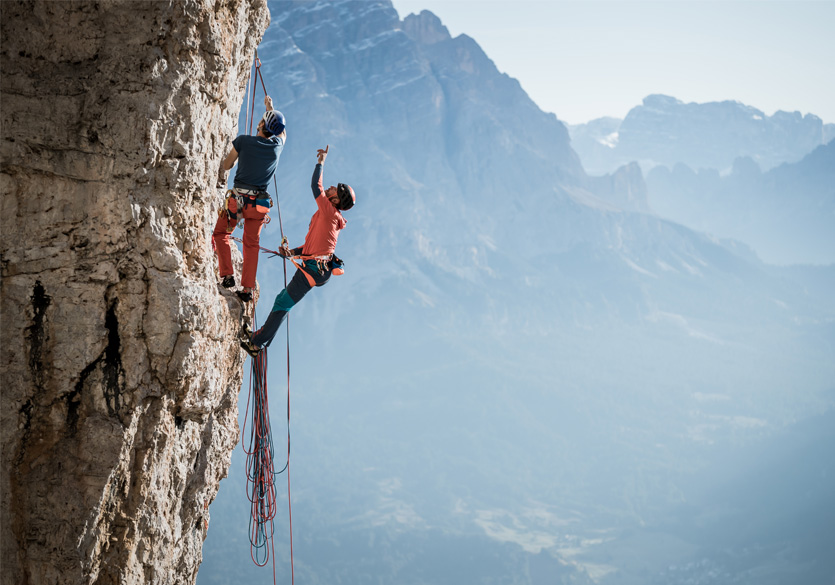
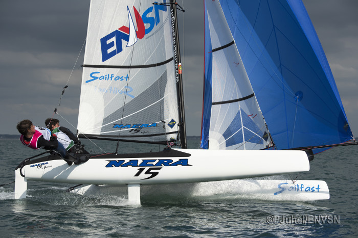

Escalade
Je suis passionné d'escalade depuis maintenant près de 10 ans, j'ai atteint le passeport rouge. J'en fais aussi bien en salle qu'en extèrieur sur falaises.
Voile
La voile est aussi un sport que je pratique depuis longtemps, j'ai d'ailleurs obtenu mon monitorat l'année il y a deux ans. Je pratique aussi bien le catamaran SL16 et NACRA 15 que la planche à voile.
Japon
Une partie de ma famille étant japonaise, je suis passioné par cette culture. Je m'y suis déjà rendu plusieurs fois et j'ai eu l'occasion de découvrir les différends aspects de ce pays. L'un de mes objectifs est de pouvoir y travailler plus tard!